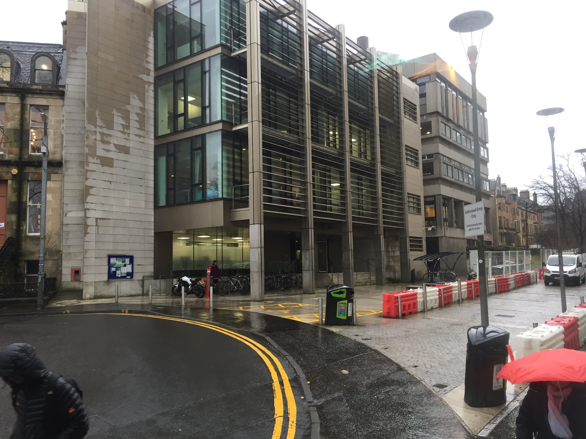

Location
The Postgraduate Combinatorial Conference 2020 will be held in the
School of Computing Science, University of Glasgow. It will run from Monday 27th - Wednesday 29th
April, co-located with the Scottish Combinatorics Meeting which will run in the same venue from Thursday 30th April - Friday 1st May.

Room 422
School of Computing Science
Sir Alwyn Williams Building
Lilybank Gardens
Glasgow
G12 8RZ
Travel Info
The School of Computing Science in the Sir Alwyn Williams Building is located
on the main Gilmorehill campus of the University of Glasgow in the west
end of the city.
Rail 🚆
Glasgow has 2 main rail stations:
Glasgow Queen Street
and
Glasgow Central
(5 minute walk between each), both in the city centre. Most cross-country
services go to Glasgow Central. From the South: Virgin / LNER trains run
along the East Coast and West Coast Main Lines.
If the train terminates at Glasgow Queen Street / Central, you can use
the Subway to get to the west
end (get on at Buchanan Street and get off at Hillhead). The Subway does
run late but it’s not 24 hour. It’s also a 40-minute walk or a short
cycle.
Most trains from the south will terminate at Glasgow Queen Street /
Glasgow Central, but check because some do go further and stop at
Partick station
which is just a 20-minute walk from the School of Computing Science.
Air ✈
If you’re travelling internationally or from the south, it’s often cheaper
to fly to Glasgow than take the train.
Glasgow Airport is a little out of
the city however. You could get the
500 Airport Express
(every 10 minutes) to the city centre then take the Subway into the west
end. Note - make sure you do not fly to Glasgow Prestwick Airport, it's very far away from the city!
Road 🚗
From the south-east: M1 / A1(M) to Edinburgh, M8 to Glasgow From the
south-west: M6 to Glasgow
Accommodation
We have made a list of nearby hotels to the University, ordered by
distance. There are of course more, which we don't recommend any less than
those listed below.
If you are on a budget, we recommend the Glasgow Youth Hostel.
Eating and Drinking
Glasgow’s west end is known for being trendy. There are tons of cool bars and restaurants if you want to make the most of your time here. Some fun places near the University that we could think of:
- Ashton lane, a cobbled street containing cool bars and pubs. Brel is a Belgian bar, one of our favourites - also serves food.
- Paesano pizza - claims to be the best pizza in Scotland - we agree.
- Tantrum doughnuts - Instagram famous doughnut and coffee shop.
- Ushas - A great Indian restaurant, just 10 minutes walk away.
- Roast coffee shop - breakfasts and coffee.
- MacTassos - Greek gyro van on Kelvin Way near the University. Just read the Tripadvisor reviews...